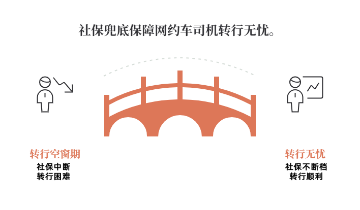
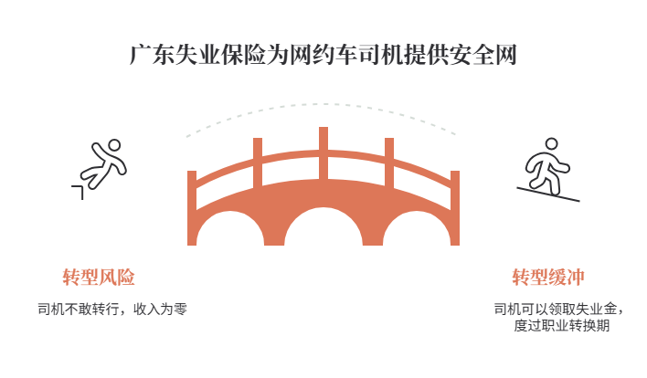
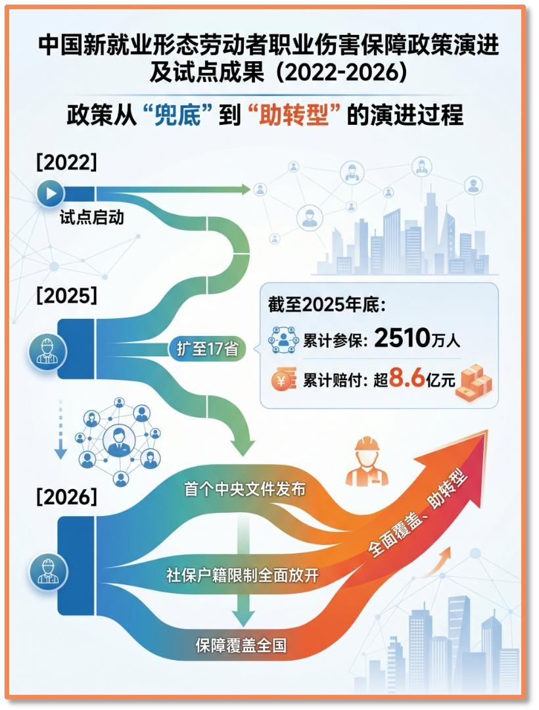
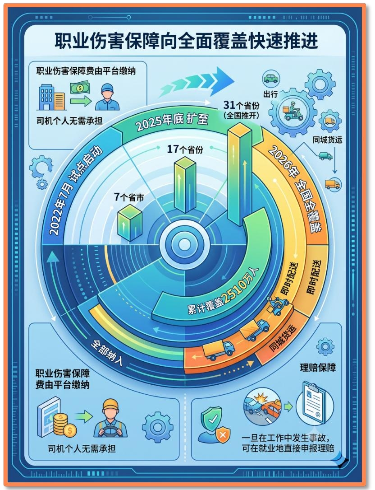
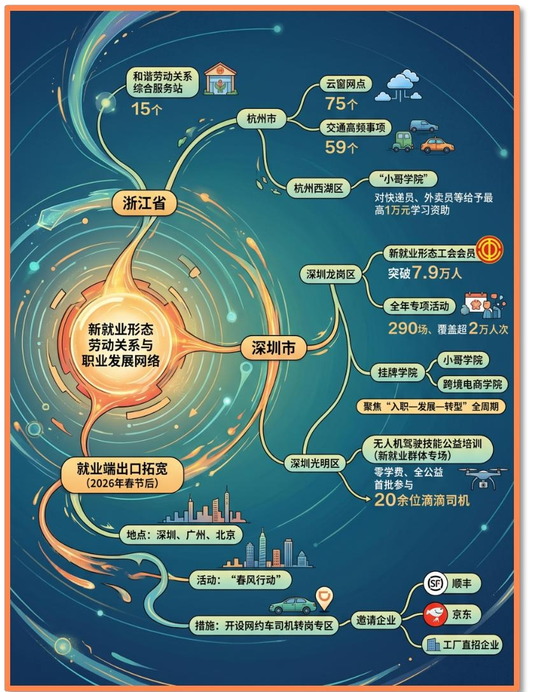

失业保障


曾经，网约车司机往往因失业保障缺口而不敢转行。2026年1月1日起，《广东省灵活就业人员参加失业保险办法》施行，率先在大湾区9市和汕头市试点推广。新业态从业者，即便没和平台签劳动合同，也能自愿参保失业保险，失业后符合条件即可申领失业金。这意味着在行业饱和被迫退出时，网约车司机可以领取失业保险金度过职业转换期，为转行提供关键的过渡缓冲。
职业伤害保障


新就业形态人员职业伤害保障也在同步推进。2022年7月，职业伤害保障试点在北京、上海、江苏、广东、海南、重庆、四川7个省份启动，涵盖曹操出行、美团、饿了么、达达、闪送、货拉拉、快狗打车7家平台企业。2025年7月1日起，试点已扩围至17个省份11家平台企业。2026年，试点向全国推开，31个省份全面覆盖。截至2026年6月底，试点累计参保人数达到2990.2万人，对新就业形态人员职业伤害特别是重大伤亡事故的保障功能得到有效发挥。
职业伤害保障费由平台缴纳，司机个人无需承担。一旦在工作中发生事故，可在就业地直接申报理赔。
暖心服务

2025年10月，中共中央办公厅、国务院办公厅印发《关于加强新就业群体服务管理的意见》，各地积极贯彻落实。浙江省已建成和谐劳动关系综合服务站15个，杭州市在75个云窗网点上线59个交通高频事项。深圳龙岗区新就业形态工会会员突破7.9万人，全年计划开展专项活动290场、覆盖超2万人次，挂牌“小哥学院”和“跨境电商学院”，聚焦“入职—发展—转型”全周期。杭州西湖区“小哥学院”对快递员、外卖员等新就业群体给予最高1万元学习资助。深圳光明区推出无人机驾驶技能公益培训新就业群体专场，“零学费、全公益”，首批已有20余位新就业群体参与。
就业端的出口也正在拓宽。2026年春节后，深圳、广州、北京等地在“春风行动”中开设网约车司机转岗专区，邀请顺丰、京东、工厂直招企业入场。
网约车司机们被困在车轮与算法之间。他们不仅是劳动者，也是被技术变革重新定义的职业群体。当行业的体量已远超市场的承载能力，当每一笔订单都被算法悄然定价，当政策的光亮仍只是少数人的出口——转行，便不再是一道选择题，而是一场需要被真正接住的系统工程。